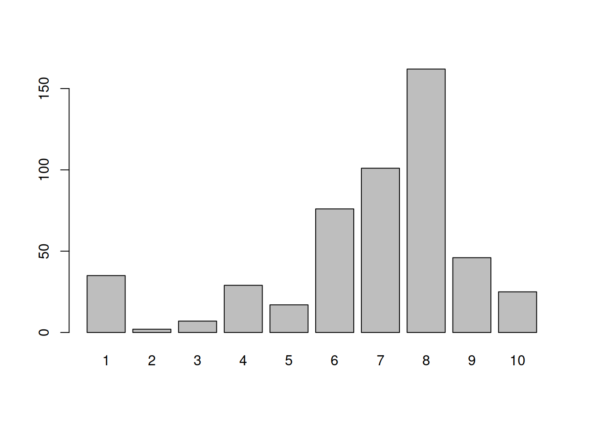
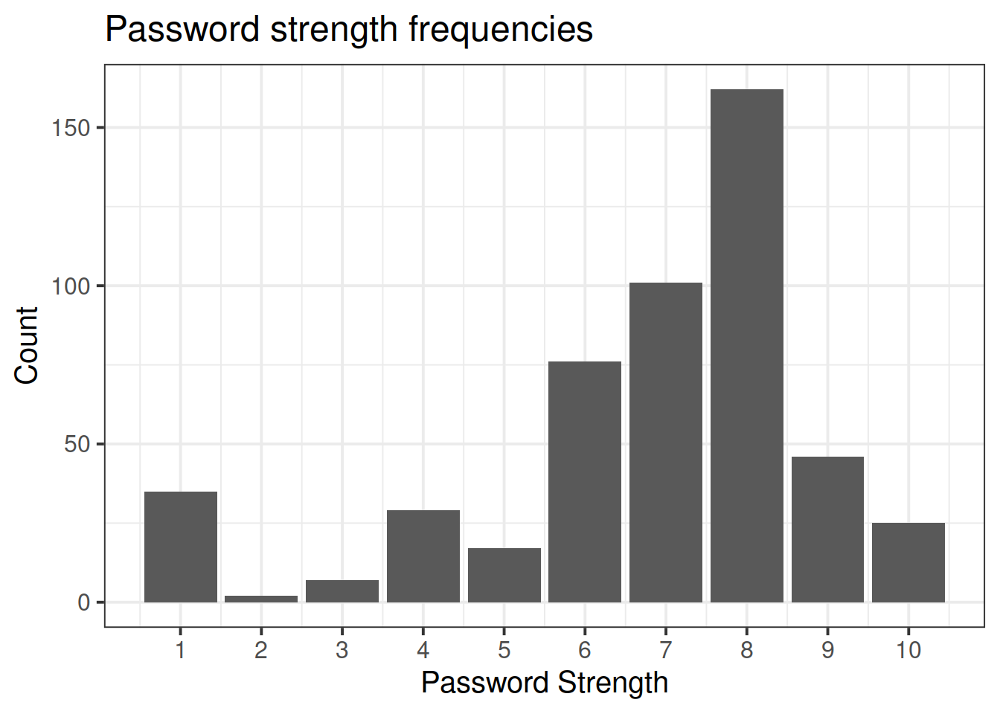

Categorical Data
Preliminaries
Please ensure you have successfully installed R and RStudio, or are working on RStudio Cloud, and that you have completed the tasks on the Getting started in R & RStudio page, which introduced the basics of a) how to navigate around Rstudio, b) how to create a Rmarkdown document, c) how to read data into R, and d) how to use R to do basic arithmetic.
Open Rstudio, and make sure you have your USMR course project open.
Open a new Rmarkdown document:
File > New File > R Markdown..
Exercises: Dice Simulations
You can add a code-chunk with the “Insert” button in the top right of your Rmarkdown document and clicking “R”, or you can use the shortcut of Ctrl + Alt + i.
In your first code-chunk, copy the code from the lecture which creates a custom function called dice() (copied below). Be sure to run the code-chunk.
dice <- function(num = 1) {
sum(sample(1:6, num, replace=TRUE))
}
What did that code-chunk do?
In a sense, this code-chunk does nothing: It won’t give you any output when you run it. What it is actually doing, though, is defining a function called dice(). If you look at your environment panel (top right), you’ll see dice appear when you run the code.
To produce some output, we have to call the function dice() (by writing it into code: dice(4), for example). dice() wants to be supplied with some information (in the argument num). If no information is supplied, num will take a default value of 1. (So writing dice() is equivalent to writing dice(1)).
What does dice() do with num? It calls another function, sample(), with 3 arguments. We didn’t write sample(): it’s a function that’s “supplied with” R. To find out more about what sample() does:
click inside the brackets just after
sample()in your RMarkdown document (not this document; the one in RStudio);press
TAB(⇥), thenF1you should see some help appear in the bottom right-hand panel of RStudio.
You will find that “sample() takes a sample … from the elements of x …” If you compare the code in RStudio to the code under “Usage” you’ll see that where the help has x, we have 1:6. So what does 1:6 mean? One way to find out is to open the console in RStudio (bottom left) and just type stuff in. What happens when you type 1:6? What about 2:17? (What about 6:1?)
The console is the place to “try stuff out” (don’t worry, you can’t break it). Watch the video below and then try it out yourself:
What you will discover is that 1:6 creates a vector (list of similar things, in this case numbers) of the numbers 1-6.
The next bit of the sample() function is size. In the dice() function, the num passes down to the size of the sample(): Looking through the help, size is the number of items to choose. So sample(1:6, 1) would choose one number from the numbers 1-6 at random; sample(1:6, 3) would choose 3, and so on. The last argument, replace=TRUE, tells sample() what to do with a number once it’s been picked: Does it go ‘back into the bag’ to be picked again (TRUE) or not? (FALSE)?
Around the outside is sum() which simply sums the numbers on however many (num) dice you “rolled”.
Putting it all together, our dice() function “throws a die num times” by sample()ing from the numbers 1-6 num times, replaceing each number when it’s been picked, and sums the numbers of all the dice.
Look up the function replicate(). We can use it to do something in R lots of times!
# run the code "1+1" 20 times:
replicate(20, 1+1)## [1] 2 2 2 2 2 2 2 2 2 2 2 2 2 2 2 2 2 2 2 2Use replicate() to simulate 100 rolls of a single dice (Hint: this means num = 1), and store the results in an object in your environment. Give it an easily identifiable name.
Refresher: defining things in R, we use the syntax name <- value
Create a barplot showing the frequency with which each number was landed on in the 100 rolls.
Hint: the functions table() and barplot() were used to do this in the lecture.
Do the same for 1,000 rolls, and then for 10,000.
What do you notice?

Copy the code below into a code-chunk and run it.
It creates a new function called wdice() which simulates the rolling of num dice which are slightly weighted.
Roll a single weighted die 100 times and plot the frequency distribution. Do the same for 1,000 and 10,000 rolls of a single die.
Does a pattern emerge? At how many rolls?
wdice <- function(num = 1){
sum(sample(1:6, num, replace=TRUE, prob = c(0.15,0.15,0.15,0.15,0.15,0.25)))
}
Remember, wdice() and dice() are really just relying on different functions, like sample(). Try playing around with sample() in the console again - what does the prob = c(....) bit do?
Now let’s try to modify the wdice() function. Edit the code for wdice() so that 50% of the time it lands on number 6.
NOTE: To test out your modified function, you will need to re-run code which defines the function.
Think of it as “overwriting”, “replacing”, or “reassigning”
# define an object called "x" which has the value 3
x <- 3
# print the object x
x ## [1] 3# reassign the name "x" to 2 plus the current value of x.
x <- x + 2
# x is now 5, not 3
x## [1] 5When we use the assignment operator <- we assign a name to a value and store in R’s memory.
To edit any of these named objects, we simply reassign the name to the edited value. This applies to functions, to dataframes, and to specific observations in dataframes etc.
Can you observe the weighting in your new die (the one which 50% of the time lands on number 6) in only 100 rolls?
Conceptually, what can we learn from this toy example?
Hint: Think of how strongly weighted the die is as an effect size, and the number of rolls as the sample size.
Reading: Data in R
Now that we’ve played with a toy example for a bit, we’re going to look at reading in some data, exploring some of the variables, and the syntax we can use to access and edit certain bits of a dataset.
Reading in data
First we’ll load the tidyverse package, so that we can use the read_csv() function.
library(tidyverse)
starwars2 <- read_csv("https://uoepsy.github.io/data/starwars2.csv")Reading data from a URL
Note that when you have a url for some data (e.g. this) you can read it in directly by giving functions like read_csv() the url inside quotation marks.
The data contains information on various characteristics of characters from Star Wars.
We can print out the top of the data by using the head() function which displays the first six rows of the data by default. You could change this by saying, for example, head(data, n = 10):
head(starwars2, n = 10)## # A tibble: 10 x 6
## name height hair_color eye_color homeworld species
## <chr> <dbl> <chr> <chr> <chr> <chr>
## 1 Luke Skywalker 172 blond blue Tatooine Human
## 2 C-3PO 167 <NA> yellow Tatooine Human
## 3 R2-D2 96 <NA> red Naboo Droid
## 4 Darth Vader 202 none yellow Tatooine Human
## 5 Leia Organa 150 brown brown Alderaan Human
## 6 Owen Lars 178 brown, grey blue Tatooine Human
## 7 Beru Whitesun lars 165 brown blue Tatooine Human
## 8 R5-D4 97 <NA> red Tatooine Droid
## 9 Biggs Darklighter 183 black brown Tatooine Human
## 10 Obi-Wan Kenobi 182 auburn, white blue-gray Stewjon Human(Don’t worry about the NAs for now, they are just how R tells you an entry is missing, i.e. Not Available.)
Tip: Try clicking on the data in your environment (the top right window of RStudio). It will open the data in a tab in the editor window - this is another way of looking at the data, more like you would in spreadsheet software like Microsoft Excel. This can be time-consuming if your data file is big.
We can take a look at how big the data is (the dimensions), using dim()
dim(starwars2)## [1] 75 6We can see that there are 75 rows and 6 columns.
In the starwars2 data, each character is an observational unit, and there are 6 variables (things which vary between units) such as their height, species, homeworld, etc.
Units and variables
The individual entities on which data are collected are called observational units or cases. Often (but not always), these equate to the rows of a dataset.
A variable is any characteristic that varies from observational unit to observational unit (these are often the columns of the dataset)
Accessing subsets of data
What if we want to extract certain subsections of our dataset, such as specific observational units or variables?
This is where we learn about two important bits of R code used to access parts of data - the dollar sign $, and the square brackets [].
The dollar sign $
The dollar sign allows us to extract a specific variable from a dataframe.
For instance, we can pull out the variable named “eye_color” in the data, by using $eye_color after the name that we gave our dataframe:
starwars2$eye_color## [1] "blue" "yellow" "red" "yellow"
## [5] "brown" "blue" "blue" "red"
## [9] "brown" "blue-gray" "blue" "blue"
## [13] "blue" "brown" "black" "orange"
## [17] "hazel" "blue" "yellow" "brown"
## [21] "red" "brown" "blue" "orange"
## [25] "blue" "brown" "black" "red"
## [29] "blue" "orange" "orange" "orange"
## [33] "yellow" "orange" NA "brown"
## [37] "yellow" "pink" "hazel" "yellow"
## [41] "black" "orange" "brown" "yellow"
## [45] "black" "brown" "blue" "orange"
## [49] "yellow" "black" "blue" "brown"
## [53] "brown" "blue" "yellow" "blue"
## [57] "blue" "brown" "brown" "brown"
## [61] "brown" "yellow" "yellow" "black"
## [65] "black" "blue" "unknown" "unknown"
## [69] "gold" "black" "green, yellow" "blue"
## [73] "brown" "black" NAEach variable in a dataframe is a vector (a set of values). Once extracted, we will have a vector and not a dataframe.
The square brackets []
Square brackets are used to do what is known as indexing (finding specific entries in your data).
We can retrieve bits of data by identifying the \(i^{th}\) entry(s) inside the square brackets, for instance:
# assign the numbers 10, 20 ... 100 to the name "somevalues"
somevalues <- c(10, 20, 30, 40, 50, 60, 70, 80, 90, 100)
# pull out the 3rd entry
somevalues[3]## [1] 30In a dataframe we have an extra dimension - we have rows and columns. Using square brackets with a dataframe needs us to specify both:
Let’s look at some examples:
# first row, fourth column:
starwars2[1, 4]## # A tibble: 1 x 1
## eye_color
## <chr>
## 1 blue# tenth row, first column:
starwars2[10, 1]## # A tibble: 1 x 1
## name
## <chr>
## 1 Obi-Wan KenobiIf we leave either rows or columns blank, then we will get out all of them:
# tenth row, all columns:
starwars2[10, ]## # A tibble: 1 x 6
## name height hair_color eye_color homeworld species
## <chr> <dbl> <chr> <chr> <chr> <chr>
## 1 Obi-Wan Kenobi 182 auburn, white blue-gray Stewjon Human# all rows, 2nd column:
starwars2[ , 2]## # A tibble: 75 x 1
## height
## <dbl>
## 1 172
## 2 167
## 3 96
## 4 202
## 5 150
## 6 178
## 7 165
## 8 97
## 9 183
## 10 182
## # … with 65 more rowsThere are is another way to identify column - we can use the name in quotation marks:
# first row, "species" column
starwars2[1, "species"]## # A tibble: 1 x 1
## species
## <chr>
## 1 Human
Finally, we can also ask for multiple rows, or multiple columns, or both! To do that, we use the combine function c():
# the 1st AND the 6th row,
# and the 1st AND 3rd columns:
starwars2[c(1,6), c(1,3)]## # A tibble: 2 x 2
## name hair_color
## <chr> <chr>
## 1 Luke Skywalker blond
## 2 Owen Lars brown, grey
And we can specify a sequence using the colon, from:to:
# FROM the 1st TO the 6th row, all columns:
starwars2[1:6, ]## # A tibble: 6 x 6
## name height hair_color eye_color homeworld species
## <chr> <dbl> <chr> <chr> <chr> <chr>
## 1 Luke Skywalker 172 blond blue Tatooine Human
## 2 C-3PO 167 <NA> yellow Tatooine Human
## 3 R2-D2 96 <NA> red Naboo Droid
## 4 Darth Vader 202 none yellow Tatooine Human
## 5 Leia Organa 150 brown brown Alderaan Human
## 6 Owen Lars 178 brown, grey blue Tatooine HumanWhy? Because the colon operator, from:to, creates a vector from the value from to the value to in steps of 1.
1:6## [1] 1 2 3 4 5 6
The dollar sign $
Used to extract a variable from a dataframe:
dataframe$variable
The square brackets []
Used to extract parts of an R object by identifying rows and/or columns, or more generally, “entries”. Left blank will return all.
vector[entries]dataframe[rows, columns]
Accessing by a condition
We can also do something really useful, which is to access all the entries in the data for which a specific condition is true.
Let’s take a simple example to start:
somevalues <- c(10, 10, 0, 20, 15, 40, 10, 40, 50, 35)To only select values which are greater than 20, we can use:
somevalues[somevalues > 20]## [1] 40 40 50 35Unpacking: somevalues[somevalues > 20]
First, let’s look at what somevalues > 20 does. It returns TRUE for the entries of somevalues which are greater than 20, and FALSE for the entries of somevalues that are not (that is, which are less than, or equal to, 20.
This statement somevalues > 20 is called the condition.
somevalues > 20## [1] FALSE FALSE FALSE FALSE FALSE TRUE FALSE TRUE TRUE TRUEWe can give a name to this sequence of TRUEs and FALSEs
condition <- somevalues > 20
condition## [1] FALSE FALSE FALSE FALSE FALSE TRUE FALSE TRUE TRUE TRUENow consider putting the sequence of TRUEs and FALSEs inside the square brackets in somevalues[].
This returns only the entries of somevalues for which the condition is TRUE.
somevalues[condition]## [1] 40 40 50 35So what we can do is use a condition inside the square brackets to return all the values for which that condition is TRUE.
Note that you don’t have to always give a name to the condition. This works too:
somevalues[somevalues > 20]## [1] 40 40 50 35
We can extend this same logic to a dataframe.
Let’s suppose we want to access all the entries in our Star Wars data who have the value “Droid” in the species variable.
To work out how to do this, we first need a line of code which defines our condition - one which returns TRUE for each entry of the species variable which is “Droid”, and FALSE for those that are not “Droid”.
We can use the dollar sign to pull out the species variable:
starwars2$species## [1] "Human" "Human" "Droid" "Human" "Human"
## [6] "Human" "Human" "Droid" "Human" "Human"
## [11] "Human" "Human" "Wookiee" "Human" "Rodian"
## [16] "Hutt" "Human" "Human" "Human" "Human"
## [21] "Trandoshan" "Human" "Human" "Mon Calamari" "Human"
## [26] "Ewok" "Sullustan" "Neimodian" "Human" "Gungan"
## [31] "Gungan" "Gungan" "Toydarian" "Dug" "unknown"
## [36] "Human" "Zabrak" "Twi'lek" "Twi'lek" "Vulptereen"
## [41] "Xexto" "Toong" "Human" "Cerean" "Nautolan"
## [46] "Zabrak" "Tholothian" "Iktotchi" "Quermian" "Kel Dor"
## [51] "Chagrian" "Human" "Human" "Human" "Geonosian"
## [56] "Mirialan" "Mirialan" "Human" "Human" "Human"
## [61] "Human" "Clawdite" "Besalisk" "Kaminoan" "Kaminoan"
## [66] "Human" "Aleena" "Skakoan" "Muun" "Togruta"
## [71] "Kaleesh" "Wookiee" "Human" "Pau'an" "unknown"And we can ask R whether each value is equal to “Droid” (Remember: in R, we ask whether something is equal to something else by using a double-equals, ==). A single equal sign would be wrong, as it denotes assignment.
starwars2$species == "Droid"## [1] FALSE FALSE TRUE FALSE FALSE FALSE FALSE TRUE FALSE FALSE FALSE FALSE
## [13] FALSE FALSE FALSE FALSE FALSE FALSE FALSE FALSE FALSE FALSE FALSE FALSE
## [25] FALSE FALSE FALSE FALSE FALSE FALSE FALSE FALSE FALSE FALSE FALSE FALSE
## [37] FALSE FALSE FALSE FALSE FALSE FALSE FALSE FALSE FALSE FALSE FALSE FALSE
## [49] FALSE FALSE FALSE FALSE FALSE FALSE FALSE FALSE FALSE FALSE FALSE FALSE
## [61] FALSE FALSE FALSE FALSE FALSE FALSE FALSE FALSE FALSE FALSE FALSE FALSE
## [73] FALSE FALSE FALSEFinally, we can use this condition inside our square brackets to access the entries of the data for which this condition is TRUE:
# I would read the code below as:
# "In the starwars2 dataframe, give me all the rows for which the
# condition starwars2$species=="Droid" is TRUE, and give me all the columns."
starwars2[starwars2$species == "Droid", ]## # A tibble: 2 x 6
## name height hair_color eye_color homeworld species
## <chr> <dbl> <chr> <chr> <chr> <chr>
## 1 R2-D2 96 <NA> red Naboo Droid
## 2 R5-D4 97 <NA> red Tatooine Droid
Editing parts of the data
Now that we’ve seen a few ways of accessing sections of data, we can learn how to edit them!
One of the most common reasons you will need to modify entries in your data is in data cleaning. This is the process of identifying incorrect/incomplete/irrelevant data, and replacing/modifying/deleting them.
Changing specific entries
Above, we looked at the subsection of the data where the species variable had the entry “Droid”. Some of you may have noticed earlier that we had some data on C3PO. Is he not also a droid?

(Looks pretty Droid-y to me! disclaimer: I know nothing about Star Wars üôÇ )
Just as we saw above how to access specific entries, e.g.:
# 2nd row, all columns
starwars2[2, ]## # A tibble: 1 x 6
## name height hair_color eye_color homeworld species
## <chr> <dbl> <chr> <chr> <chr> <chr>
## 1 C-3PO 167 <NA> yellow Tatooine Human# 2nd row, 6th column (the "species" column)
starwars2[2,6]## # A tibble: 1 x 1
## species
## <chr>
## 1 HumanWe can change these by assigning them a new value (remember the <- symbol):
# C3PO is a droid, not a human
starwars2[2,6] <- "Droid"
# Look at the 2nd row now -
# the entry in the "species" column has changed:
starwars2[2, ]## # A tibble: 1 x 6
## name height hair_color eye_color homeworld species
## <chr> <dbl> <chr> <chr> <chr> <chr>
## 1 C-3PO 167 <NA> yellow Tatooine DroidWe have replaced / overwritten / reassigned , the entry in the 2nd row and 6th column of the data (starwars2[2,6]) with the value “Droid”.
Changing entries via a condition
We saw above how to access parts of data by means of a condition, with code such as:
# "In the starwars2 dataframe, give me all the rows for which the
# condition starwars2$homeworld=="Naboo" is TRUE, and give me all the columns."
starwars2[starwars2$homeworld=="Naboo", ]## # A tibble: 8 x 6
## name height hair_color eye_color homeworld species
## <chr> <dbl> <chr> <chr> <chr> <chr>
## 1 R2-D2 96 <NA> red Naboo Droid
## 2 Palpatine 170 grey yellow Naboo Human
## 3 Jar Jar Binks 196 none orange Naboo Gungan
## 4 Roos Tarpals 224 none orange Naboo Gungan
## 5 Rugor Nass 206 none orange Naboo Gungan
## 6 Gregar Typho 185 black brown Naboo Human
## 7 Cordé 157 brown brown Naboo Human
## 8 Dormé 165 brown brown Naboo HumanWhat if we wanted to modify it so that every character from “Naboo” was actually of species “Nabooian”?
We can do that in a number of ways, all of which do the same thing - namely, they access parts of the data and assign them the new value “Nabooian”.
Study the lines of code below and their interpretations:
# In the starwars2 data, give the rows for which condition
# starwars2$homeworld=="Naboo" is TRUE, and select only the "species" column.
# Assign to these selected entries the value "Nabooian".
starwars2[starwars2$homeworld=="Naboo", "species"] <- "Nabooian"
# In the starwars2 data, give the rows for which condition
# starwars2$homeworld=="Naboo" is TRUE, and select only the 6th column.
# Assign to these selected entries the value "Nabooian".
starwars2[starwars2$homeworld=="Naboo", 6] <- "Nabooian"
# Extract the species variable from the starwars2 data (it's a vector).
# Pick the entries for which the condition starwars2$homeworld=="Naboo" is TRUE.
# Assign to these selected entries the value "Nabooian".
starwars2$species[starwars2$homeworld=="Naboo"] <- "Nabooian"Changing a variable
Another thing we might want to do is change a whole variable (a whole column) in some way.
The logic is exactly the same, for instance, we can take the variable “height” from the dataframe “starwars2”, dividing it by 100 via starwars2$height / 100, and then assign the result to the same variable name in the data, i.e. we overwrite the column:
starwars2$height <- starwars2$height / 100We coud instead have added a new column named “height2” with those values if we did not want to overwrite “height”:
starwars2$height2 <- starwars2$height / 100This would have left the “height” variable as-is, and created a new one called “height2” which was the values in “height” divided by 100.
Removing rows or columns
Lastly, we might want to change the data by removing a row or a column.
Again, the logic remains the same, in that we use <- to assign the edited data to a name (either a new name, thus creating a new object, or an existing name, thereby overwriting that object).
For instance, notice that the 35th and 75th rows of our data probably aren’t a valid observation - I’m reasonably sure that Marge and Homer Simpson never appeared in Star Wars:
starwars2[c(35,75), ]## # A tibble: 2 x 6
## name height hair_color eye_color homeworld species
## <chr> <dbl> <chr> <chr> <chr> <chr>
## 1 Marge Simpson 1.7 Blue <NA> Springfield unknown
## 2 Homer Simpson 1.8 <NA> <NA> Springfield unknownWe can remove a certain row(s) by using a minus sign - inside the square brackets
# everything minus the 75th row
starwars2[-75, ]## # A tibble: 74 x 6
## name height hair_color eye_color homeworld species
## <chr> <dbl> <chr> <chr> <chr> <chr>
## 1 Luke Skywalker 1.72 blond blue Tatooine Human
## 2 C-3PO 1.67 <NA> yellow Tatooine Droid
## 3 R2-D2 0.96 <NA> red Naboo Nabooian
## 4 Darth Vader 2.02 none yellow Tatooine Human
## 5 Leia Organa 1.5 brown brown Alderaan Human
## 6 Owen Lars 1.78 brown, grey blue Tatooine Human
## 7 Beru Whitesun lars 1.65 brown blue Tatooine Human
## 8 R5-D4 0.97 <NA> red Tatooine Droid
## 9 Biggs Darklighter 1.83 black brown Tatooine Human
## 10 Obi-Wan Kenobi 1.82 auburn, white blue-gray Stewjon Human
## # … with 64 more rows# everything minus the (35th and 75th rows)
starwars2[-c(35, 75), ]## # A tibble: 73 x 6
## name height hair_color eye_color homeworld species
## <chr> <dbl> <chr> <chr> <chr> <chr>
## 1 Luke Skywalker 1.72 blond blue Tatooine Human
## 2 C-3PO 1.67 <NA> yellow Tatooine Droid
## 3 R2-D2 0.96 <NA> red Naboo Nabooian
## 4 Darth Vader 2.02 none yellow Tatooine Human
## 5 Leia Organa 1.5 brown brown Alderaan Human
## 6 Owen Lars 1.78 brown, grey blue Tatooine Human
## 7 Beru Whitesun lars 1.65 brown blue Tatooine Human
## 8 R5-D4 0.97 <NA> red Tatooine Droid
## 9 Biggs Darklighter 1.83 black brown Tatooine Human
## 10 Obi-Wan Kenobi 1.82 auburn, white blue-gray Stewjon Human
## # … with 63 more rowsAnd we can simply re-use the name “starwars2” to overwrite the data and make this change take effect (rather than just print out the result, which the code above did):
starwars2 <- starwars2[-c(35, 75), ](now, in the environment pane of Rstudio, the object named “starwars2” will say 73 observations, rather than 75, which it had before - we’ve removed the 2 rows)
The same logic applies for columns:
# Create a new object called "anonymous_starwars2" and assign it
# to the values which are the "starwars2" dataframe minus the
# 1st column (the "name" column):
anonymous_starwars2 <- starwars2[, -1]
# print out anonymous_starwars2
anonymous_starwars2## # A tibble: 73 x 5
## height hair_color eye_color homeworld species
## <dbl> <chr> <chr> <chr> <chr>
## 1 1.72 blond blue Tatooine Human
## 2 1.67 <NA> yellow Tatooine Droid
## 3 0.96 <NA> red Naboo Nabooian
## 4 2.02 none yellow Tatooine Human
## 5 1.5 brown brown Alderaan Human
## 6 1.78 brown, grey blue Tatooine Human
## 7 1.65 brown blue Tatooine Human
## 8 0.97 <NA> red Tatooine Droid
## 9 1.83 black brown Tatooine Human
## 10 1.82 auburn, white blue-gray Stewjon Human
## # … with 63 more rowsRefresher: Types of Data
In the dice-rolling example, each roll of the die could take one of a discrete set of responses (1, 2, 3, 4, 5 or 6). A die cannot land on 5.3, or 2.6.
There are many different things we can measure / record on observational units, and the data we collect will also have different characteristics. Some data will be similar to rolling a die in that values take on categories, and others could take any value on a continuous scale. Many of you filled out our little survey in welcome week. Consider the how we captured data on your heights (we asked you to answer in cm, and you could be precise as you liked) and the colours of your eyes (we gave you a set of options to choose from). We distinguish between these different types of data by talking about categorical and numerical variables. Within each, there also are a few important sub-classes.
Categorical variables tell us what group or category each individual belongs to. Each distinct group or category is called a level of the variable.
| Type | Description | Example |
|---|---|---|
| Nominal (Unordered categorical) | A categorical variable with no intrinsic ordering among the levels. | Species: Human, Droid, Wookie, Hutt, … |
| Ordinal (Ordered categorical) | A categorical variable which levels possess some kind of order | Level: Low, Medium, High |
| Binary categorical | A special case of categorical variable with only 2 possible levels | Is_Human: Yes or No. |
Numerical (or quantitative) variables consist of numbers, and represent a measurable quantity. Operations like adding and averaging make sense only for numeric variables.
| Type | Description | Example |
|---|---|---|
| Continuous | Variables which can take any real number within the specified range of measurement | Height: 172, 165.2, 183, … |
| Discrete | Variables which can only take integer number values. For instance, a counts can only take positive integer values (0, 1, 2, 3, etc.) | Number_of_siblings: 0, 1, 2, 3, 4, … |


Figure 1: Artwork by @allison_horst
Exercises: Categorical distributions
For these exercises, we have a dataset on some of the most popular internet passwords, their strength, and how long it took for an algorithm to crack it. The data are available online at https://uoepsy.github.io/data/passworddata.csv.
| Variable Name | Description |
|---|---|
| rank | Popularity in the database of released passwords |
| password | Password |
| type | Category of password |
| cracked | Time to crack by online guessing |
| strength | Strength = quality of password where 10 is highest, 1 is lowest |
| strength_cat | Strength category (weak, medium, strong) |
Read in the data from the url.
Pass the dataset to summary() to see a quick summary of each variable. Which variables are categorical?
Don’t get misled by the output of summary() - R doesn’t know what type each variable is, and will use a best guess. For instance, it will treat a variable like “strength” as numerical, when it is actually a set of ordered categories.
In R, categorical variables are known as “factors”.
Explore the help documentation for the factor() function.
(type ?factor into the console to bring the help page up).
For the “type” and “strength_cat” variables, use factor() to modify the variable so that R knows it’s a factor. Can you tell R about the ordering of the “strength_cat” variable?
After you’ve done this, try summary() again to see how the output changes for these two variables.
Create a table of frequencies of different password types.
How might you turn the table into a table of percentages, rather than of counts?
table() can take multiple variables, not just one.
We’re interested in how password strength differs between “cool-macho” passwords and “simple-alphanumeric” passwords. Make a two-way contingency table of strength and type, showing only the “cool-macho” and “simple-alphanumeric” passwords.
Hints:
We can specify multiple conditions using
&and|for “and” and “or” respectively. Try playing in the console to see what these lines do:pwords[pwords$type == "cool-macho" | pwords$type == "simple-alphanumeric", ] pwords[pwords$type == "cool-macho" & pwords$strength == 6, ] pwords[pwords$cracked > 5 & pwords$strength < 5, ] pwords[pwords$password=="bear" | pwords$strength == 2, ]You might find that the table you create has all the other “levels” in it too. You could try looking into the
droplevels()function.
For a randomly selected “cool-macho” password, what is the probability that it has a strength of \(\geq 5\)? What about for a randomly selected “simple-alphanumeric” password?
Exercises: Advanced plotting
“By visualizing information, we turn it into a landscape that you can explore with your eyes. A sort of information map. And when you’re lost in information, an information map is kind of useful.” – David McCandless
We’re going to now make our first steps into the world of data visualisation. R is an incredibly capable language for creating visualisations of almost any kind. It is used by many media companies (e.g., the BBC), and has the capability of producing 3d visualisations, animations, interactive graphs, and more.
We are going to use the most popular R package for visualisation, ggplot2. This is actually part of the tidyverse, so if we have an Rmarkdown document and have loaded the tidyverse packages at the start (by using library(tidyverse)), then ggplot2 will be loaded too).
Recall our way of plotting frequencies that we have seen so far:
barplot(table(pwords$strength))
We can also use ggplot() to visualise this. The benefit is that we can easily then edit all aspects of the visualisation.
# create the plot, and give the "mappings"
ggplot(data = pwords, aes(x = strength)) +
# add some shapes
geom_bar() +
# add some titles, axes labels etc
labs(x = "Password Strength", y = "Count", title = "Password strength frequencies")+
# specify the exact x values for the axis
scale_x_continuous(breaks=1:10)
Basic ggplot components
Note the key components of the ggplot code.
data =where we provide the name of the dataframe.aes =where we provide the aesthetics. These are things which we map from the data to the graph. For instance, the x-axis, or if we wanted to colour the columns/bars according to some aspect of the data.
Then we add (using +) some geometry. These are the shapes (in our case, the columns/bars), which will be put in the correct place according to what we specified in aes().
- `+ geom_….` Adds different shapes (e.g., bars) to the plot.
You can find great documentation on ggplot2 at https://www.statsandr.com/blog/graphics-in-r-with-ggplot2/.

Figure 2: Artwork by @allison_horst
Create a ggplot visualisation which shows how password strengths (either the categories 1:10, or the categories weak, medium, and strong) are different depending on the password type. There’s no Correct answer to this, but certain ways of visualising provide different perspectives, and different levels of clarity.
Some things you might to look into (but don’t have to use):
facet_wrap()orfacet_grid()coord_flip()

This workbook was written by Josiah King, Umberto Noe, and Martin Corley, and is licensed under a Creative Commons Attribution 4.0 International License.